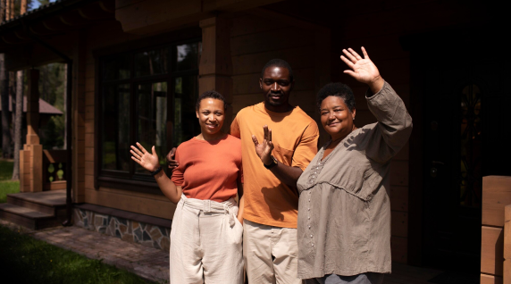

La participation citoyenne au cœur de chaque décision est la pierre angulaire de Sama Gokh. En impliquant directement les habitants dans le processus décisionnel, nous nous assurons que chaque voix compte et que les besoins réels de la communauté sont entendus.
Améliorer la transparence : Permettre une plus grande transparence dans la gestion des projets de la commune en rendant les informations accessibles et en recueillant les avis de la population.
Renforcer l'implication citoyenne: Intégrer les habitants directement dans le processus de prise de décision en leur permettant de voter sur les projets municipaux et de soumettre leurs propres propositions..
